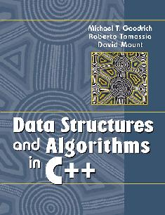

NETB201 Data Structures

Chapter 1: Basic C++ Programming
1.1 Basic C++ Programming
Elements
1.1.1 A Simple C++ Program
#include <stdlib>
#include <iostream>
int main()
{ int x, y;
std::cout << "Please enter two numbers: ";
std::cin >> x >> y; // input stream
int sum = x + y;
std::cout << "Their sum is " << sum << std::endl;
return EXIT_SUCCESS;
}
Highlighting the C++ Elements
- header files
- function body
- standard output stream std::cout
- standard input stream
std::cin
- using namespace std;
-- operator - as an element of a programming language (+, =, ==)
-- operation - as an action or a state (addition,
assignment, equal)
1.1.2 Fundamental Types
bool
char
short
int
long
float
double
enum |
true, false
character - 'A'
short integer
integer
long integer
single-precision
floating-point number
double-precision
floating-point number
enumeration - a set of
discrete values |
bool,
char,
int
and enum
are called integral types.
void
indicates the absence of any type information (only for function
type).
http://en.cppreference.com/w/cpp/language/type
Enumerations
An enumeration is a user-defined type that can hold any of a set of
discrete values.
enum Color { RED, GREEN, BLUE }; // default values are 0, 1, 2
enum Week { MONDAY = 1, TUESDAY, WEDNESDAY, THURSDAY, FRIDAY, SATURDAY, SUNDAY };
// values are 1, 2, 3, .., 7
enum Mood { HAPPY = 3, SAD = 1, ANXIOUS = 4, SLEEPY = 2 };
Color skyColor = BLUE;
Mood myMood = SLEEPY;
Week day = TUESDAY;
1.1.3 Pointers, Arrays, and
Structures
Pointers
Each variable is stored in the computer's memory at some location,
or address. A pointer holds
the value of such an address.
The address-of operator,
&
returns the address of a variable.
Accessing the object addressed by a pointer is called dereferencing, and is done using
* operator.
char ch = 'Q';
char* p = &ch; // p holds the address of ch
cout << *p; // outputs the character 'Q'
ch = 'Z'; // ch now holds 'Z'
cout << *p; // outputs the character 'Z'
Arrays
An array is a collection of
elements of the same type. Subscript (index) operator returns the
elements of the array.
double f[3]; // array of 3 doubles f[0], f[1], f[2]
double* p[10]; // array of 10 double pointers p[0]..p[9]
f[2] = 2.5;
p[4] = &f[2]; // p[4] points to f[2]
cout << *p[4]; // outputs 2.5
int a[] = { 10, 11, 12, 13 }; // initialization
int b[20] = { 0 }; // initialize all elements with value 0
C++ provides no build-in
runtime checking for array subscripting out of bounds [common
programming error]!
C-Style Structures
A structure is useful for storing an aggregation of elements. The
elements (members or fields) may be of different
types.
enum MealType { NO_PREF, REGULAR, LOW_FAT, VEGETARIAN };
struct Passenger {
string name; // "John Smith"
MealType mealPref; // LOW_FAT
bool isFreqFlyer; // true
string freqFlyerNo; // "293145"
};
|
This defines a new type called Passenger. The individual member of the
structure variable (object) are accepted using the member selection (dot) operator,
which has the form struct_variable.member.
Passenger pass = { "John Smith", LOW_FAT, true, "293145" };
pass.name = "Pocahontas"; // change name
pass.mealPref = VEGETARIAN; // change meal preference
|
This is C-style structure. In general, structures and classes in C++
provide a much wider range of capabilities than what is possible in
C-style structures (member functions, access control, etc).
Pointers, Dynamic Memory,
and the new
Operator
The C++ runtime system reserves a large block of memory called free memory (dynamic memory or heap memory).
The operator new
dynamically allocates the correct amount of storage for an object of
a given type from the free storage and returns a pointer to this
object.
Passenger *p;
//...
p = new Passenger; // p points the new Passenger
p->name = "Pocahontas"; // member selection(arrow) operator
p->mealPref = VEGETARIAN; // change meal preference
p->isFreqFlyer = false;
p->freqFlyerNo = "NONE";
//...
delete p;
|
This new passenger object continuous to exist in the free store
until it is explicitly deleted.
Memory Leaks
If an object is allocated with
new, it should be eventually be deallocated with delete.
char* buffer = new char[500];
//...
delete buffer; // ERROR: delete only the fist element buffer[0]
Having inaccessible objects in dynamic memory is called memory leak.
char* buffer = new char[500];
//...
delete [] buffer; // delete all elements
1.1.4 Scope and Namespaces
Constants and typedef
Good programmers commonly like to associate names with constant
quantities.
const double PI = 3.14159265;
const int CUT_OFF[] = {90, 80, 70, 60};
const int N_DAYS = 7;
const int N_HOURS = 24*N_DAYS;
int counter[N_HOURS];
It is often useful to associate a name with a type:
typedef char* BufferPtr; // type BufferPtr is a pointer to char
typedef double Coordinate; // type Coordinate is a double
//...
BufferPtr p; // p is a pointer to a char
Coordinate x, y; // x and y are of type double
Local and Global Scopes
The portion of a program, from which a given name is accessible is
called its scope.
const int cat = 1; // global cat
int main()
{
const int cat = 2; // local cat (to main)
cout << cat; // outputs 2
return 0;
}
int dog = cat; // dog = 1 (from global cat)
Namespaces
A namespace is a mechanism
that allows a group of related names to be defined in one place.
namespace myglobals {
int cat;
string dog = "bow wow";
}
int d = myglobals::cat;
We can access an object x
in namespace group,
using the notation group::x,
which is called fully qualified
name.
namespace.cpp
The Using Statement
using std::cout;
using myglobals::cat;
or
using namespace std;
using namespace myglobals;
1.2 Expressions
An expression combines variables and literals with operators to
create new values.
Member Selection and Indexing
Let
- class_name
denote the name of a structure or class;
- member
denote a member (or field) of this structure or class;
- pointer
denote a pointer to a structure or class;
- array
denote an array or a pointer to the first element of an array;
- exp
to denote an expression (rvalue),
an expression combines variables and literals with operators to
create new values.
Operators (lvalue):
| class_name.member |
class/structure member
selection
|
dot (member selection)
operator |
pointer->member
|
class/structure member
selection |
arrow operator
|
array[exp]
|
array subscripting
|
index (subscript) operator
|
Arithmetic Operators
Binary arithmetic operators (rvalue):
exp + exp
|
addition
|
| exp - exp |
subtraction
|
| exp * exp |
multiplication
|
| exp / exp |
division
|
| exp % exp |
modulo (remainder)
|
Unary operators: +x and -x
Increment and Decrement
Operators
- var
to denote a variable or anything to which a value may be
assigned (lvalue);
var++
|
post increment
|
var--
|
post decrement
|
| ++var |
pre increment |
| --var |
pre decrement |
int a[] = { 0, 1, 2, 3 };
int i = 2;
int j = i++; // j = 2 and then i = 3
int k = --i; // i = 2 and then k = 2
cout << a[k++]; // a[2] (=2) is output; then k = 3
Relational and Logical
Operators
Comparison operators:
exp < exp
|
less than
|
| exp > exp |
greater than
|
| exp <= exp |
less than or equal to
|
| exp >= exp |
greater than or equal to |
| exp == exp |
equal to
|
| exp != exp |
not equal to
|
These returns a boolean value - true or false.
Logical operators:
! exp
|
logical not |
| exp && exp |
logical and |
| exp || exp |
logical or |
| exp != exp |
not equal to
|
exp can be a logical or
arithmetic expression (0 means false, nonzero means true)
Bitwise Operators
~ exp
|
bitwise complement, ex.
|
~100010
->
011101 |
| exp & exp |
bitwise and (conjunction),
ex.
|
1001
&& 1100 -> 1000 |
| exp ^ exp |
bitwise exclusive-or
|
1001
^ 1100 -> 0101
|
| exp | exp |
bitwise or (disjunction)
|
1001
| 1100 -> 1101
|
| exp << exp |
shift left |
11001
<< 1 -> 10010
|
| exp >> exp |
shift right
|
11001
>> 1 -> 01100
|
Assignment Operators
Arithmetic operators (+, -, *, /, % )
and bitwise binary operators (&, ^, |, <<, >>) combine
with assignment.
int i = 10;
int j = 5;
int k = 1;
i -= 4; // i = i - 4; result 6
j *= -2; // j = j * (-2); result -10
k <<= 1; // k = k << 1; result 2
Other Operators
class_name :: member
|
class scope resolution
|
| namespace_name :: member |
namespace scope resolution |
exp ? exp : exp
|
conditional expression
|
stream >> var
|
input stream (overloaded)
|
stream << exp
|
output stream (overloaded)
|
Operator Precedence
Operators in C++ are
assigned a precedence, which determines the order in which
operations are performed in the absence of parentheses.
| Operator |
Description |
Associativity |
| :: |
scope |
Left |
| () [ ] -> . sizeof |
|
Left |
| ++ -- |
increment, decrement |
Right |
| ~ |
bitwise complement
|
! (not)
|
unary NOT |
| & * |
reference and dereference
|
..._cast, (type)
|
type casting |
| + - |
unary + and -
|
| * / % |
arithmetic operators |
Left |
| + - |
addition, subtraction |
Left |
| << >> |
bitwise shifts
|
Left |
| < <= > >= |
relational operators |
Left |
| == != |
relational operators |
Left |
&
|
bitwise and
|
Left |
| ^ |
bitwise exclusive-or |
Left |
| | |
bitwise or
|
Left |
&& (and)
|
logical operator and
|
Left |
|| (or)
|
logical operator or
|
Left |
| ?: |
conditional operator
|
Left |
= += -= *= /= %=
>>= <<= &= ^= |= |
assignment operators
|
Right |
| , |
comma, separator |
Left |
int a = 10, b, c, d;
// right associativity
d = c = b = a; // is equivalent to d = (c = (b = a));
// left associativity
d - c + b - a; // is equivalent to ((d - c) + b) - a;
// precedence
d > c && -b <= a // is equivalent to (d > c) && ((-b) <= a)
1.3 Control Flow
if (<condition>) <operator>;
if (<condition>) <operator1>; else <operator2>;
while(<condition>) <opetator>;
do <operator>; while(<condition>);
for ([<initialization>];
[<condition>]; [<increment>]) <operator>;
for ([<expression1>];
[<expression2>]; [<expression3>]) <operator>;
return [<expression>];
1.4 Functions
1.4.2 Overloading
Function Overloading
Function overloading occurs when two or more functions are defined
with the same name but different
argument lists.
void print(int x)
{ cout << x; }
void print(const Passenger &pass)
{
cout << pass.name << " " << pass.mealPref;
if (pass.isFreqFlyer) cout << pass.freqFlyerNo;
}
|
Operator Overloading
The equality test for two Passenger objects:
bool operator==(const Passenger &x, const Passenger &y)
{
return x.name == y.name &&
x.mealPref == y.mealPref &&
x.isFreqFlyer == y.isFreqFlyer &&
x.freqFlyerNo == y.freqFlyerNo;
}
|
Using Overloading
ostream& operator<<(ostream &out, const Passenger &pass)
{
out << pass.name << " " << pass.mealPref;
if (pass.isFreqFlyer) out << pass.freqFlyerNo;
return out;
}
//...
Passenger pass1 = // details omitted
Passenger pass2 = // details omitted
cout << pass1 << pass2 << endl;
|
1.5 Classes
1.5.1 Class Structure
A class consists of members. Members that are variable or constants
are data members (member
variables) and members that are functions are called member functions (methods).
Access Control
Members may be declared to be public,
which means that they are accessible form outside the class, or private, which means that they
are accessible only from
within the class. The keywords public and private
are access specifiers, the default is private.
Member Functions
enum MealType { NO_PREF, REGULAR, LOW_FAT, VEGETARIAN };
class Passenger {
private:
string name; // "John Smith"
MealType mealPref; // LOW_FAT
bool isFreqFlyer; // true
string freqFlyerNo; // "293145"
public:
Passenger(); // default constructor
bool isFreqFlyer() const; // accessor function
void makeFreqFlyer(const string &newFreqFlyerNo);
// update (mutator) function
};
// ...
bool Passenger::isFreqFlyer() const
{
return isFreqFlyer;
}
void Passenger::makeFreqFlyer(const string &newFreqFlyerNo)
{
isFreqFlyer = true;
freqFlyerNo = newFreqFlyerNo;
}
//...
Passenger pass;
//...
if (!pass.isFreqFlyer()) // OK
pass.makeFreqFlyer("999999"); // OK
pass.name = "Joe Blow"; // ERROR: private member
|
In-Class Function Definition
enum MealType { NO_PREF, REGULAR, LOW_FAT, VEGETARIAN };
class Passenger {
private:
string name; // "John Smith"
MealType mealPref; // LOW_FAT
bool isFreqFlyer; // true
string freqFlyerNo; // "293145"
public:
Passenger();
bool isFreqFlyer() const
{ return isFreqFlyer; }
void makeFreqFlyer(const string &newFreqFlyerNo)
{
isFreqFlyer = true;
freqFlyerNo = newFreqFlyerNo;
}
};
|
1.5.4 Class Friends and Class Members
class Matrix; // Matrix definition comes later
class Vector { // a 3-element vector
private:
double coord[3];
public:
// ...
friend class Matrix; // allow Matrix access to coord
};
class Matrix { // a 3x3 array
private:
double a[3][3];
public:
// ...
Vector multiplyBy(const Vector& v) { // multiply (a * v)
Vector w(0, 0, 0);
for (int i = 0; i < 3; i++)
for (int j = 0; j < 3; j++)
w.coord[i] += a[i][j] * v.coord[j]; // access private data
return w;
}
};
Nesting Classes
Classes may contain member variables, member functions and types. We
can nest a class definition within another class.
class Complex {
private:
class Node {
// ...
};
//...
};
1.5.5 The Standard Template
Library
The Standard Template Library (STL) is a collection of useful
classes for common data structures.
Standard containers:
stack
|
Container with last-in,
first-out access
|
queue
|
Container with first-in,
first-out access |
deque
|
Double-ended queue
|
vector
|
Resizeable array
|
list
|
Doubly linked list
|
priority_queue
|
Queue ordered by value
|
set,
multiset
|
Set
|
map,
multimap
|
Associative array
(dictionary)
|
Each STL-class object can store objects of any type.
vector<int> scores(100);
vector<char> buffer(500);
vector<Passenger> passList(20);
vector<int> newScores = scores;
vector.cpp